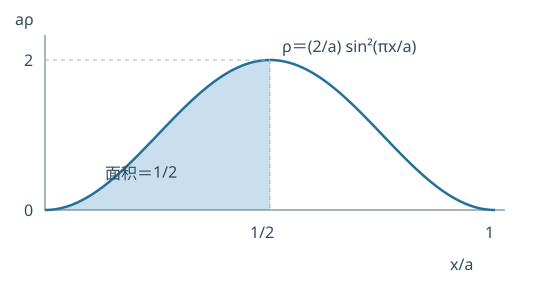

17.2 波函数及其物理意义
对应教材纸263—267。沿着“复数记号 → 自由粒子平面波 → 概率密度 → 归一化 → 教材例17-3 → 叠加”学习。目标是自己算出一个区间的概率，并分清概率幅、密度和概率。
一、复数和相位：只需先掌握这几步
i²＝−1，z＝a＋ib 的复共轭 z*＝a−ib，模平方是 |z|²＝z*z＝a²＋b²。例如3＋4i的模平方为25；1＋i的模平方为2。不要把 z² 当作 |z|²，前者可能是复数。
|eiθ|²＝cos²θ＋sin²θ＝1。
θ 称为相位。乘 eiθ 改变复数在复平面上的方向，不改变模。例如 eiπ/3 的模平方为1。复数记号把两个实数分量放在一起，后面用它既能记录幅度，也能保留干涉所需的相位。
二、自由粒子平面波怎样写
由上一节 p＝ℏk、E＝ℏω，沿＋x方向的确定动量态可写为：
三维：Ψ(r,t)＝A ei(p·r−Et)/ℏ。
教材先从简谐波的余弦形式引入复指数。经典实振动可以取复表达式的实部；量子波函数本身是复概率幅，求概率时不能只保留实部。k和ω分别记录空间、时间相位变化，指数必须无单位：px和Et都是能量乘时间。
这里精确说的是自由粒子的确定动量平面波态，不是所有自由粒子都只能有此形式。自由粒子也可由多个动量的平面波叠加成波包，概率密度可以不均匀。教材关于自由粒子E、p为常量的讨论针对这种理想单色态。
本章进入非相对论薛定谔理论时，将能量零点选在不含静能的位置，自由粒子 E＝p²/(2m)。若使用相对论总能量，相位还含统一的静能时间因子；对同一粒子的各分量须使用一致约定。
三、从波函数到概率：先取模平方，再积分
玻恩解释把波函数看作概率幅。对归一化的一维单粒子态，位置概率密度为 ρ(x,t)＝|Ψ(x,t)|²。它不是电子的质量或电荷被摊开的密度，也不是某个点的概率。
P(a≤x≤b)＝∫ab |Ψ(x,t)|² dx。
若密度在小区间Δx内变化很小，才可估算 P≈ρ(x,t)Δx；通常需积分。对连续位置分布，单个点的概率为0，比较“哪里最可能”通常指比较等长小区间内的概率，即密度大小。
一维中 ρ 的单位为 m⁻¹，Ψ 为 m⁻¹ᐟ²；三维中分别为 m⁻³、m⁻³ᐟ²。概率无单位，在0与1之间；密度有单位，数值可以大于1。例如均匀分布在4 m长区间，ρ＝1/(4 m)，其中1 m子区间的概率为1/4。
三维需 P(区域Ω)＝∭Ω|Ψ|²dV；球坐标的 dV＝r²sinθ dr dθ dφ，不能漏掉几何因子。由同样制备的大量粒子的落点频率检验这个统计规律；一次局域探测事件不会单独画出整套条纹。
四、归一化：把总概率定为1
单粒子在全空间被找到的总概率为1，要求 ∫|Ψ|²dx＝1（三维用体积分）。给定未归一化函数 f，若 N＝∫|f|²dx 是有限且非零的数，则：
∫|f/√N|²dx＝(1/N)∫|f|²dx＝1。
整体乘非零常数后，重新归一化表示同一物理态；已经归一化的波函数若仍要保持归一化，只能乘模为1的常数 eiα。α须与位置无关；位置相关相位可能改变动量等物理量。整体相位不改变状态，各叠加分量的相对相位却可能改变干涉。
平面波与标准条件的使用范围
理想平面波的 |Ψ|²＝|A|²在无限空间恒定，积分发散，无法令非零A满足普通总概率归一化。可采用有限盒归一化（长度L内 |A|＝1/√L）、可积波包，或教材提到的δ函数广义归一化；不要把广义归一化常数硬代入普通全空间概率积分。
教材标准条件为单值、有限、连续。入门的常规有限势能定态通常还需在势的分段边界匹配 Ψ 和导数；无限高势壁、δ势等理想模型的条件要另行处理。“积分能归一化”本身不足以证明它是某个势能模型的合格定态。
设 Ψ＝C（0<x<a），其他处为0。归一化得 |C|²a＝1，选 C＝1/√a；左半区间概率＝|C|²(a/2)＝1/2，平均位置 ⟨x⟩＝∫₀ᵃx/a dx＝a/2。这只是积分示例；边界突变，不是有限势能下具有有限动能的合格定态，也不满足无限深势阱壁面Ψ＝0的条件。
五、教材例17-3：正弦波函数的完整三问
题设：粒子约束在0<x<a，Ψ(x)＝A sin(πx/a)，区间外为0。求归一化因子、左半区间概率、最可能位置。下面把三问连起来计算，注意区分密度和区间概率。
（1）求A：不要漏掉平方
sin²u＝(1−cos2u)/2；
∫₀ᵃsin²(πx/a)dx＝[x/2−a sin(2πx/a)/(4π)]₀ᵃ＝a/2。
故 |A|²＝2/a；取A正实数，得 A＝√(2/a)。还可乘任意整体相位，但所有概率不变。A的单位是长度的负二分之一次方，和Ψ一致。
（2）左半概率：用积分或对称性互检
＝[x/a−sin(2πx/a)/(2π)]₀a/2＝1/2。
ρ＝(2/a)sin²(πx/a) 关于a/2左右对称，总积分为1，所以左半为1/2也可直接看出。但密度不是均匀的，不能推出“任意等长区间概率相同”。
（3）最可能位置：比较密度，而非单点概率
dρ/dx＝(2π/a²)sin(2πx/a)。令其为0，0<x<a 内只有 x＝a/2；该点 sin²＝1，而端点密度为0，故 ρ在a/2最大。教材“概率最大的位置”应理解为等小区间比较下的密度最大。

延伸并保留原练习：若只说长度L，替换a为L即可；⟨x⟩＝∫₀ᵃxρdx＝a/2，由对称性或积分可得。本例平均位置恰好等于密度峰，但一般分布不一定如此。区间(0,a/4)的概率为1/4−1/(2π)≈0.09085，可以用它检查自己是否误当均匀分布。
六、叠加先加概率幅
同一体系的可叠加状态可组成 Ψ＝c₁Ψ₁＋c₂Ψ₂。只要组合不为零且可归一化，它也表示可能状态；仍要检查总归一化，不能随意选系数后就说概率总和为1。
＋2Re(c₁*c₂Ψ₁*Ψ₂)。
最后一项是干涉交叉项。某个结果的两路幅度若为1/2与1/2，合模平方为1；若为1/2与−1/2，则为0。这只演示一个结果，完整装置各结果概率仍需总和为1。若路径信息可区分或相位随机平均使交叉项消失，才按相应的不相干概率相加。
若Ψ₁、Ψ₂归一且正交（∫Ψ₁*Ψ₂dx＝0），整个态的归一化给 |c₁|²＋|c₂|²＝1；若不正交，积分后的交叉项也需保留。正交使全空间交叉积分为0，不等于每个位置的局部交叉项都为0。
单一能量定态 Ψ(x,t)＝φ(x)e−iEt/ℏ 的密度为|φ|²，不随时间变；不同能量态叠加时，相对时间相位一般使密度变化。定态的结论不能直接套给任意状态。
七、自测与回顾
1. 若Ψ是复数，能用Ψ²代替|Ψ|²吗？密度大于1是否错误？
不能。|Ψ|²＝Ψ*Ψ为非负实数；Ψ²一般不同。密度有单位，数值可大于1，必须检查区间积分才是0至1的概率。
2. 本例左半概率1/2，是否每次都在中点？平均值是否一定是可测到的结果？
不是。位置按密度分布；平均值是重复实验的加权平均。比如结果只可能−1、＋1且各半，平均为0，也不代表能测到0。
3. 将Ψ整体乘以i，与只把一个叠加分量乘以i有何不同？
整体乘i是统一相位，任何位置密度不变。只改一个分量会改变相对相位，交叉项和干涉可能改变。
做概率题按“写支持区间 → 取模平方 → 全空间归一化 → 所求区间积分 → 检查单位与0到1”完成。下一节用波动与概率分布理解位置和动量的不确定性，不要把它当成仪器粗糙造成的误差。